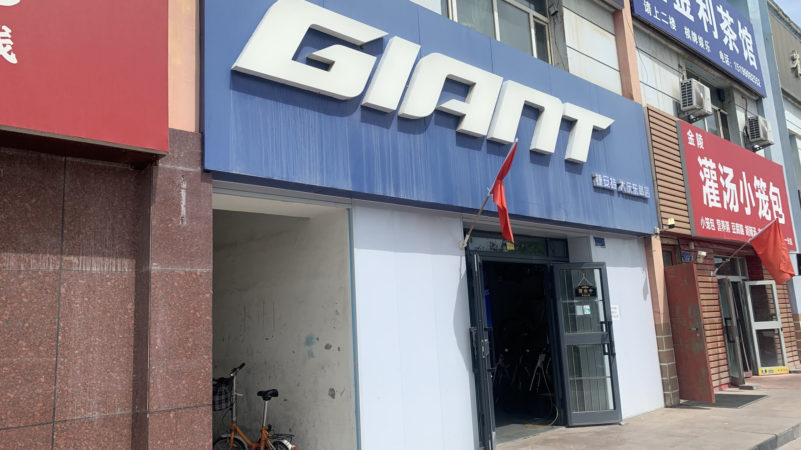
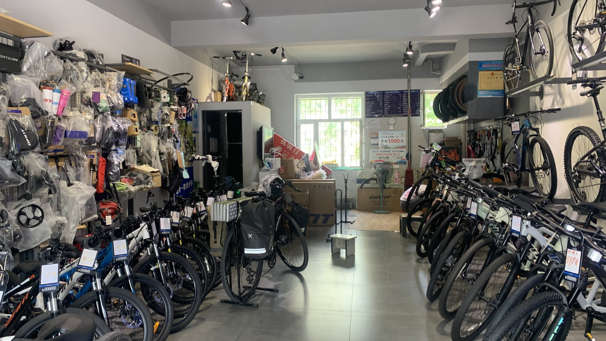
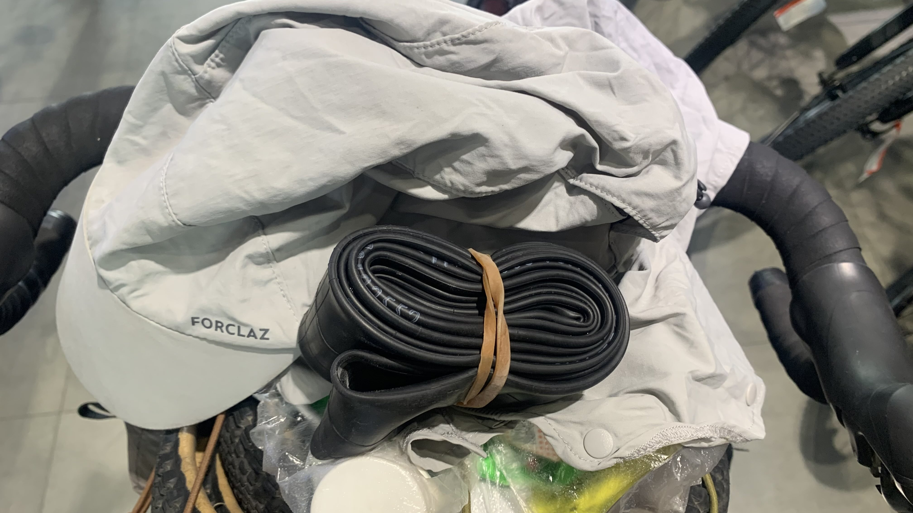
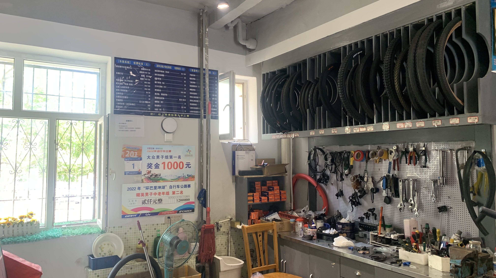
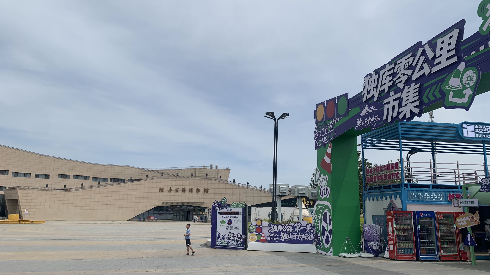
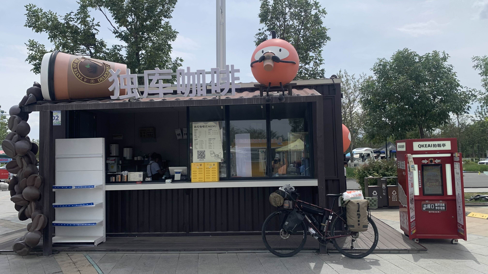
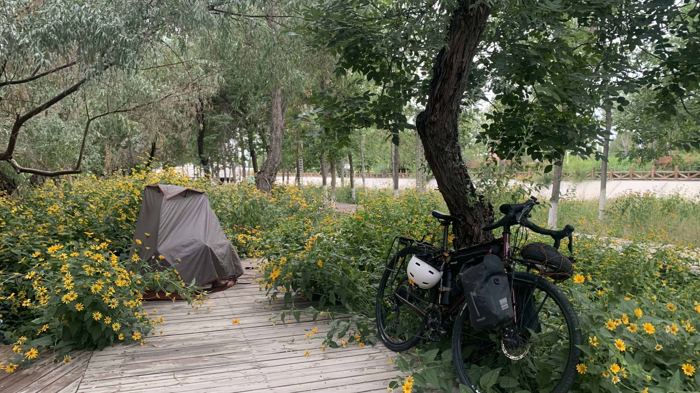
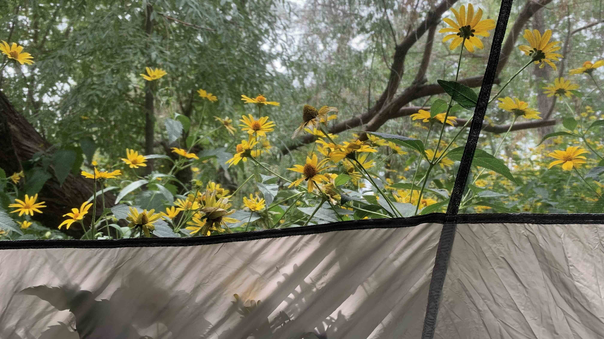
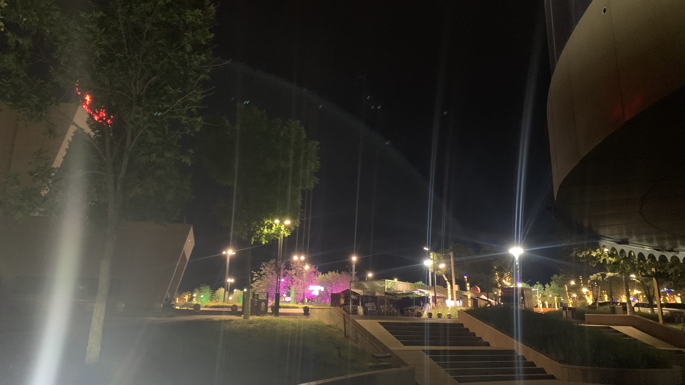

k-Day 144｜獨庫公路零起點

退房後想找一間咖啡廳上傳日誌，在城裡繞了幾圈，不是關著門就是泡咖啡的人沒來。昨晚丟掉兩條不合規的內胎，烏蘭巴托車行老闆幫二十三號換上的高檔Maxxis內胎在烏魯木齊的美利達遺落了一條，決定到公路起點附近的捷安特再買條內胎。

牆上的頭巾、袖套、車包、水壺品項齊全，比烏魯木齊的選擇更多一些，實在不需要在大城市硬買些不合規或自己不怎麼滿意的產品。
老闆說二十三號可以放在店裡，讓我去吃個午餐再回來。心裡回想起在赤峰Trek的遭遇，不免擔心二十三的安危，但是老闆沒有拿著手機狂拍她，也沒有推銷我幫二十三號安裝一些公路車的流線型水壺架，應該不會有問題吧。
到隔壁吉祥餛飩點了一碗餛飩和一份小酥肉，竟然是沾番茄醬而不是胡椒粉嗎？

回到捷安特，看到牆上的維修價格表，詢問老闆是否願意幫我補上包裡的Maxxis內胎。補好後老闆不收費。

放上店內的維修價格表，想爬獨庫公路的話推薦這間店家。
一路上許多自駕或騎過摩托上山的人都跟我說獨庫公路是個大挑戰，一路攀升彎彎曲曲的山路，沒有護欄、連開車都危險......，問了老闆上面的路況，他回想了一下，平靜地說：「上一次從獨山子到庫車花三天。」嗯，不該問他。

帶著二十三號到獨庫公路起點，大大的市集看板非常解。人潮不多，倒是跟起點石碑拍照的觀光客排成一列。

到處都是攤車，買了一杯獨庫咖啡。這裡跟我想像的完全不一樣啊，旁邊甚至還有小型摩天輪之類的，天山不該是什麼神聖不可侵犯的領土嗎？

牽著二十三號躲進旁邊公園裡的木棧道，在花叢間架起內帳。周圍有幾個帳篷，也有帳篷外停著一輛自行車的。開始有點緊張感。

新疆的綠化真的做得不錯，這句話應該說了好幾次，但是每到一個城鎮都會感受到一次井然有序的清新。
大前天餐廳老闆的弟弟和我說，他們穆斯林的家都必須打掃乾淨，院子會種上各種花卉，等我到南疆就會看到。也許這是真的。

大晚上的都要十二點了，廣場還在播放電音舞曲。出帳篷尿尿看著眼前的景象感到一絲荒謬，對於未來一週的路心裡很是緊張，電音在緊張之外添加了一撮不耐與一撮厭惡。
今日花費： 內胎 30、餛飩 27、零食飲料 56.9、咖啡 20元